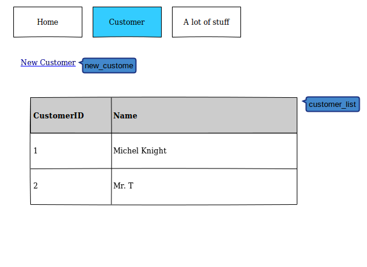
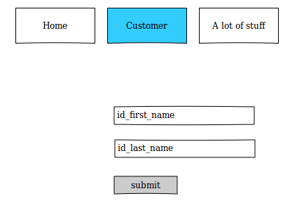

Kleines Beispiel Projekt
Die weltbeste CRM Lösung
Entwickelt mit Django und Lettuce
Die Story
Erstellen eines Customers
Das Scribble: Kunden auflistung

Das Scribble: Kunden erstellen

Create a customer
Feature: Creation of an Customer
Any user should be able of creating a Customer
Scenario: Creation of a Customer without any trouble
Given: I'm in the Customer section
When: I click on "new_customer"
and: I write "Barney" in "id_first_name"
and: I write "Stinson" in "id_last_name"
and: I submit the form "customer_form"
Then: the table "customer_list" should be:
| CustomerID | Name |
| 1 | Barney Stinson |
Create a customer 2
...
Scenario: Try to create a user without the mandatory fields
Given: I'm in the Customer section
When: I click on "new_customer"
and: I write "" in "id_first_name"
and: I write "" in "id_last_name"
and: I submit the form "customer_form"
Then: I expect to see the message "This field is required"